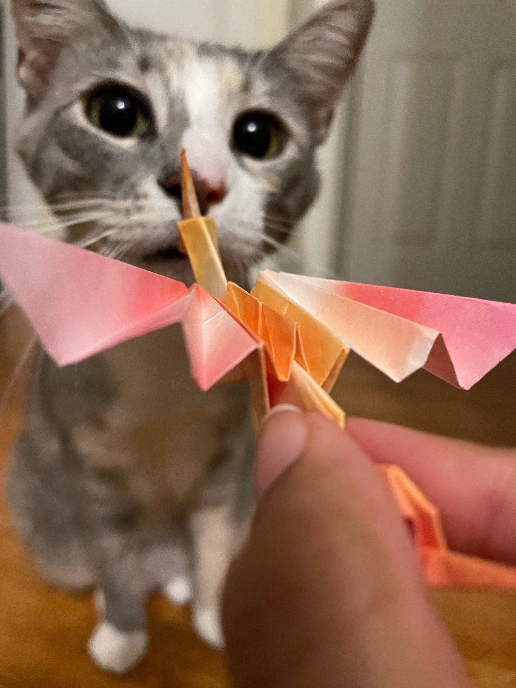

Photography has been a constant throughout my life. Even before I leaned into the artistic aspect of taking photos, my parents were (and still are) insistent on taking photos whenever the opportunity arises. I became inspired to take a more artistic approach when I was in eighth grade. The cherry blossom trees in our backyard were blooming and I was feeling inspired, so I took my dad’s phone and spent an hour playing around with lighting and angles outside.
I didn't learn formal photography techniques until last year, in my IB Literature and Language class. The class had a unit on visual storytelling and the techniques that go into taking a picture. It was there that I learned about the rule of thirds and golden ratio, and subsequently started paying more attention to the photos I consumed. Whenever I see an aesthetically pleasing photo, my first reaction is to observe the rule of thirds. The class also taught me about how lighting, angles, and color change a picture, and even if I don’t consciously think about those lessons, they come through when I am photographing. I love trying out different combinations of factors when I take pictures, and generally experimenting with the limits of my phone camera. I also love how easy and accessible photography can be at the beginner level. I own no equipment except for my phone, which means that the heavy lifting of taking cool pictures relies on my knowledge of photography techniques. The practice has paid off, and my pictures have improved drastically as a result.